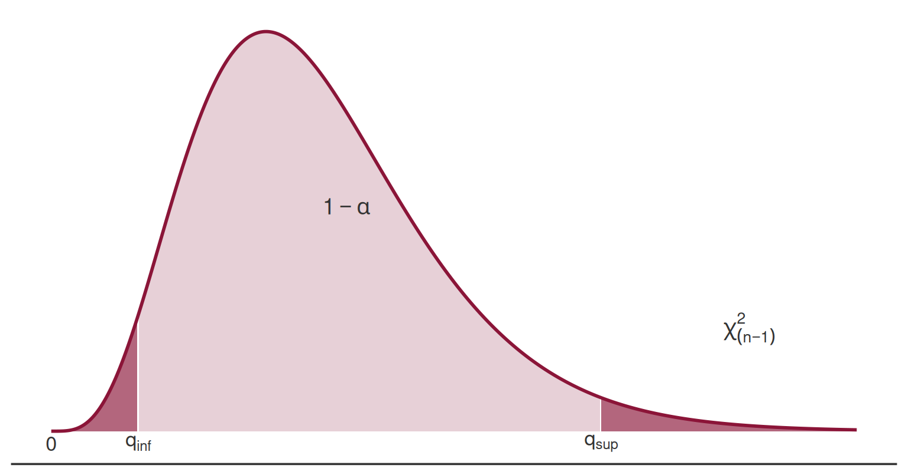

Interval Estimation — Part 2
Interval Estimation — Part 2
Interval Estimation — Part 2
Topics covered
2’) Confidence Interval for the Population Mean, \(\mu\), of Non-Normal Populations
Confidence Interval for the Proportion, \(p\), of a Bernoulli Population
Confidence Interval for the Variance, \(\sigma^2\), and Standard Deviation, \(\sigma\), of a Normal Population
2’) CI for \(\mu\) — Non-Normal Populations
Case 3 — Non-Normal Population and \(n > 30\)
Consider a random sample \(X_1, X_2, \ldots, X_n\), \(n \in \mathbb{N}\) and \(n > 30\), drawn from a population \(X\) of unknown or non-Normal distribution.
Regardless of whether \(\sigma\) is known or not, the pivot statistic is always approximately \(N(0,1)\) (by the Central Limit Theorem):
If \(\sigma\) known:
\[\underbrace{\mu}_{\text{parameter}} \;\longrightarrow\; \underbrace{\bar{X}}_{\text{point estimator}} \;\longrightarrow\; \underbrace{Z = \dfrac{\bar{X} - \mu}{\sigma / \sqrt{n}}}_{\text{pivot statistic}} \;\dot{\sim}\; N(0,1)\]
If \(\sigma\) unknown:
\[\underbrace{\mu}_{\text{parameter}} \;\longrightarrow\; \underbrace{\bar{X}}_{\text{point estimator}} \;\longrightarrow\; \underbrace{Z = \dfrac{\bar{X} - \mu}{S' / \sqrt{n}}}_{\text{pivot statistic}} \;\dot{\sim}\; N(0,1)\]
Case 3 — Confidence Intervals for \(\mu\)
The approximate \((1-\alpha)\times 100\%\) confidence intervals for \(\mu\) are:
If \(\sigma\) known:
\[IC_{(1-\alpha)\times100\%}(\mu) \approx \left(\bar{x} - z_{\alpha/2}\frac{\sigma}{\sqrt{n}},\; \bar{x} + z_{\alpha/2}\frac{\sigma}{\sqrt{n}}\right)\]
If \(\sigma\) unknown:
\[IC_{(1-\alpha)\times100\%}(\mu) \approx \left(\bar{x} - z_{\alpha/2}\frac{s'}{\sqrt{n}},\; \bar{x} + z_{\alpha/2}\frac{s'}{\sqrt{n}}\right)\]
Case 3 — Application Exercise
Application Exercise — Setup
An insurance company has budgeted an average daily payout of no more than 5,000 monetary units (m.u.) per day to cover its policyholders’ claims. To validate this estimate, 100 days were randomly selected from the company’s historical records, yielding:
\[\bar{x} = 5{,}625 \text{ m.u.} \qquad s' = 2{,}500 \text{ m.u.}\]
Find a 95% CI for the mean daily payout and determine whether 5,000 m.u./day is sufficient.
Application Exercise — Solution
Population distribution: unknown; \(\sigma\): unknown.
Sample: \(n = 100\), \(\bar{x} = 5{,}625\), \(s' = 2{,}500\).
Pivot statistic: \(\;Z = \dfrac{\bar{X} - \mu}{S'/\sqrt{n}} \;\dot{\sim}\; N(0,1)\)
\[1-\alpha = 0.95 \;\Leftrightarrow\; \alpha = 0.05 \;\Rightarrow\; z_{\alpha/2} = 1.96\]
\[IC_{95\%}(\mu) \approx \left(5{,}625 - 1.96\times\frac{2{,}500}{\sqrt{100}}\;;\; 5{,}625 + 1.96\times\frac{2{,}500}{\sqrt{100}}\right)\]
\[\boxed{IC_{95\%}(\mu) \approx (5{,}135\;;\; 6{,}115)}\]
Application Exercise — Conclusion
\[IC_{95\%}(\mu) \approx (5{,}135\;;\; 6{,}115)\]
3) CI for the Proportion \(p\)
CI for the Proportion — Setup
Consider a random sample \(X_1, X_2, \ldots, X_n\), \(n \in \mathbb{N}\), \(n > 30\), drawn from a Bernoulli population:
\[X \sim \mathrm{Bernoulli}(p), \quad 0 < p < 1\]
(equivalently, \(X \sim \mathrm{Binomial}(1, p)\))
\[\underbrace{p}_{\text{parameter}} \;\longrightarrow\; \underbrace{\frac{Y}{n}}_{\substack{\text{point} \\ \text{estimator}}} \;\longrightarrow\; \underbrace{Z = \dfrac{\hat{p} - p}{\sqrt{\hat{p}\hat{q}/n}}}_{\text{pivot statistic}} \;\dot{\sim}\; N(0,1)\]
where \(Y = \displaystyle\sum_{i=1}^{n} X_i\), \(\;\hat{p} = \bar{X} = \dfrac{Y}{n}\), and \(\hat{q} = 1 - \hat{p}\).
CI for the Proportion — Formula
The approximate \((1-\alpha)\times 100\%\) confidence interval for \(p\) is:
\[\boxed{IC_{(1-\alpha)\times100\%}(p) \approx \left(\hat{p} - z_{\alpha/2}\sqrt{\frac{\hat{p}\,\hat{q}}{n}},\; \hat{p} + z_{\alpha/2}\sqrt{\frac{\hat{p}\,\hat{q}}{n}}\right)}\]
Application Exercise — Proportion
Application Exercise — Setup
In a given district, 840 out of 2,000 voters surveyed in a poll declared they would vote for Party A.
Construct a 95% confidence interval for the proportion of voters supporting Party A.
Population: \(X \sim \mathrm{Bernoulli}(p)\), where \(p\) = proportion of Party A voters.
Sample: \(n = 2{,}000\); \(x = 840\) (observed Party A voters in the sample).
\[\hat{p} = \frac{x}{n} = \frac{840}{2{,}000} = 0.42 \qquad \hat{q} = 1 - \hat{p} = 0.58\]
Application Exercise — Solution
Pivot statistic: \(\;Z = \dfrac{\hat{p} - p}{\sqrt{\hat{p}\hat{q}/n}} \;\dot{\sim}\; N(0,1)\)
\[1-\alpha = 0.95 \;\Leftrightarrow\; \alpha = 0.05 \;\Rightarrow\; z_{\alpha/2} = 1.96\]
\[IC_{95\%}(p) \approx \left(0.42 - 1.96\sqrt{\frac{0.42\times 0.58}{2{,}000}}\;;\; 0.42 + 1.96\sqrt{\frac{0.42\times 0.58}{2{,}000}}\right)\]
With 95% confidence, the proportion of Party A voters in the district is between 39.83% and 44.16%.
4) CI for \(\sigma^2\) and \(\sigma\)
CI for the Variance — Setup
Consider a random sample \(X_1, X_2, \ldots, X_n\), \(n \in \mathbb{N}\), drawn from a Normal population \(X \sim N(\mu, \sigma)\), with both \(\mu\) and \(\sigma\) unknown.
\[\underbrace{\sigma^2}_{\text{parameter}} \;\longrightarrow\; \underbrace{S'^{\,2}}_{\substack{\text{point} \\ \text{estimator}}} \;\longrightarrow\; \underbrace{Q = \dfrac{(n-1)S'^{\,2}}{\sigma^2}}_{\text{pivot statistic}} \;\sim\; \chi^2_{(n-1)}\]
The pivot statistic \(Q\) follows exactly a chi-squared distribution with \(n-1\) degrees of freedom.
CI for \(\sigma^2\) — Probability Statement
\[P(Q < q_{\inf}) = P(Q > q_{\sup}) = \frac{\alpha}{2}\]
CI for \(\sigma^2\) and \(\sigma\) — Formulas
The \((1-\alpha)\times100\%\) confidence interval for \(\sigma^2\) is:
\[\boxed{IC_{(1-\alpha)\times100\%}(\sigma^2) = \left(\frac{(n-1)\,s'^{\,2}}{q_{\sup}}\;,\; \frac{(n-1)\,s'^{\,2}}{q_{\inf}}\right)}\]
If a CI for \(\sigma\) is required, take the square root of each bound:
\[\boxed{IC_{(1-\alpha)\times100\%}(\sigma) = \left(\sqrt{\frac{(n-1)\,s'^{\,2}}{q_{\sup}}}\;,\; \sqrt{\frac{(n-1)\,s'^{\,2}}{q_{\inf}}}\right)}\]
where \(q_{\inf}\) and \(q_{\sup}\) are the lower and upper critical values of the \(\chi^2_{(n-1)}\) distribution.
Application Exercise — Variance
Application Exercise — Setup
Based on a random sample of \(n = 16\) observations drawn from a Normal population, a corrected sample standard deviation of \(s' = 3.872\) was obtained.
Construct a 95% confidence interval for the population variance.
Population: \(X \sim N(\mu, \sigma)\), both parameters unknown.
Sample: \(n = 16\), \(s' = 3.872\).
Pivot statistic:
\[Q = \frac{(n-1)\,S'^{\,2}}{\sigma^2} \sim \chi^2_{(n-1)} \equiv \chi^2_{(15)}\]
Application Exercise — Finding the Critical Values
We need \(q_{\inf}\) and \(q_{\sup}\) from the \(\chi^2_{(15)}\) distribution (Table 6, row 15):
\[1-\alpha = 0.95 \;\Leftrightarrow\; \alpha = 0.05 \;\Rightarrow\; \frac{\alpha}{2} = 0.025\]
\[P(Q > q_{\sup}) = \frac{\alpha}{2} = 0.025 \;\underset{\substack{\text{Table 6} \\ \text{row 15},\; \varepsilon=0.025}}{\Longrightarrow}\; q_{\sup} = 27.488\]
\[P(Q < q_{\inf}) = \frac{\alpha}{2} \;\Leftrightarrow\; P(Q > q_{\inf}) = 1 - \frac{\alpha}{2} = 0.975 \;\underset{\substack{\text{Table 6} \\ \text{row 15},\; \varepsilon=0.975}}{\Longrightarrow}\; q_{\inf} = 6.262\]
Application Exercise — Result for \(\sigma^2\)
\[IC_{95\%}(\sigma^2) = \left(\frac{(16-1)\times 3.872^2}{27.488}\;;\; \frac{(16-1)\times 3.872^2}{6.262}\right)\]
Application Exercise — Result for \(\sigma\)
If a confidence interval for \(\sigma\) is required, take the square root of each bound:
\[IC_{95\%}(\sigma) = \left(\sqrt{\frac{(16-1)\times 3.872^2}{27.488}}\;;\; \sqrt{\frac{(16-1)\times 3.872^2}{6.262}}\right)\]
Summary — All Cases
| Case | Parameter | Population | \(n\) | Pivot | CI type |
|---|---|---|---|---|---|
| 1 | \(\mu\) | Normal, \(\sigma\) known | any | \(Z \sim N(0,1)\) | Exact |
| 2 | \(\mu\) | Normal, \(\sigma\) unknown | \(\leq 30\) | \(T \sim t_{(n-1)}\) | Exact |
| 2* | \(\mu\) | Normal, \(\sigma\) unknown | \(> 30\) | \(Z \;\dot{\sim}\; N(0,1)\) | Approx. |
| 3 | \(\mu\) | Any, \(\sigma\) known | \(> 30\) | \(Z \;\dot{\sim}\; N(0,1)\) | Approx. |
| 3* | \(\mu\) | Any, \(\sigma\) unknown | \(> 30\) | \(Z \;\dot{\sim}\; N(0,1)\) | Approx. |
| — | \(p\) | Bernoulli | \(> 30\) | \(Z \;\dot{\sim}\; N(0,1)\) | Approx. |
| — | \(\sigma^2\) | Normal | any | \(Q \sim \chi^2_{(n-1)}\) | Exact |